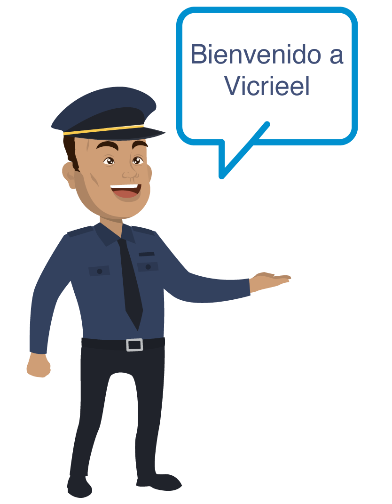

<ion-header>
    <ion-toolbar color="primary">
       <ion-buttons slot="start">
         <ion-menu-button></ion-menu-button>
       </ion-buttons> 
       <div class="plusClass" slot="end">
        <ion-icon name="menu" expand="icon-only" color="light" (click)="presentActionSheet()"> </ion-icon>
      </div>
      <ion-title>
        Invitado
      </ion-title>
    </ion-toolbar>
  </ion-header>

  <ion-content>
    <ion-slides pager>
      
      <ion-slide>
          
          
      </ion-slide>

      <ion-slide class="fondo">
        <div style="margin-top: auto; width: 100%">
          <div class="footer_main">
              <label for="">Ayudenos a mejorar nuestra seguridad</label>
              <label for="">En el mapa indica los lugares donde puede acceder</label>
          </div>

        <div class="footer">
          <button (click)="perfilInvitado()" class="botonSaltar">Saltar</button>
        </div>
      </div>
      </ion-slide>

      <ion-slide class="fondo2">
          <div style="margin-top: auto; width: 100%">
              <div class="footer_main">
                  <label for="">Haciendo tap en uno de los lugares marcados</label>
                  <label for="">podra confirmar el ingreso ayudandonos a mantener un control </label>
              </div>
    
            <div class="footer">
              <button (click)="perfilInvitado()" class="botonSaltar">Saltar</button>
            </div>
          </div>
      </ion-slide>


      <ion-slide class="fondo3">
          <div style="margin-top: auto; width: 100%">
              <div class="footer_main">
                  <label for="">Haciendo tap en uno de los lugares marcados</label>
                  <label for="">podrá tener acceso al area mediante un código QR</label>
              </div>
    
            <div class="footer">
              <button (click)="perfilInvitado()" class="botonSaltar">Saltar</button>
            </div>
          </div>
      </ion-slide>

       <ion-slide class="fondo4">
          
          
          <div style="margin-top: auto; width: 100%">
              <div class="footer_main">
                  <label for="">La seguridad de la Vicrieel siempre a las ordenes</label>
                  <label for="">gracias por ayudarnos a ciudar el bienestar de los residentes</label>
              </div>
    
            <div class="footer">
              <button (click)="perfilInvitado()" class="botonSaltar">Continuar</button>
            </div>
          </div>
          
      </ion-slide>

    </ion-slides>
</ion-content>


 
